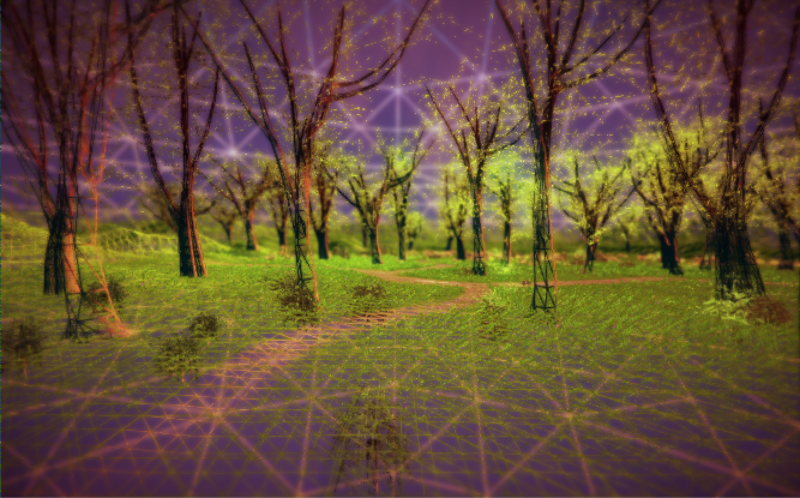
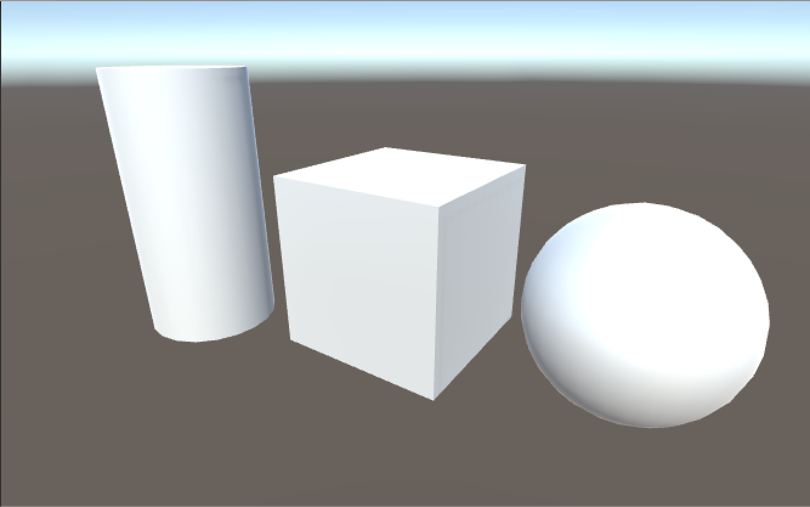
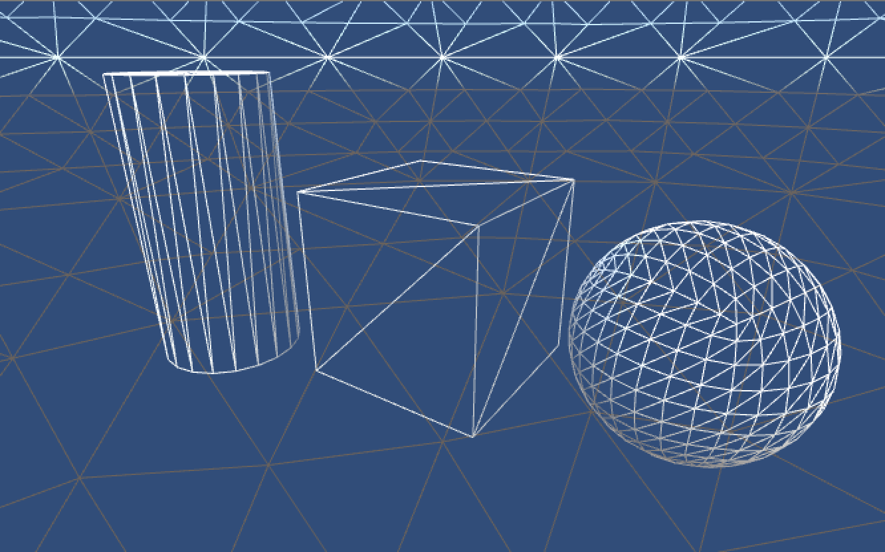
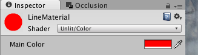
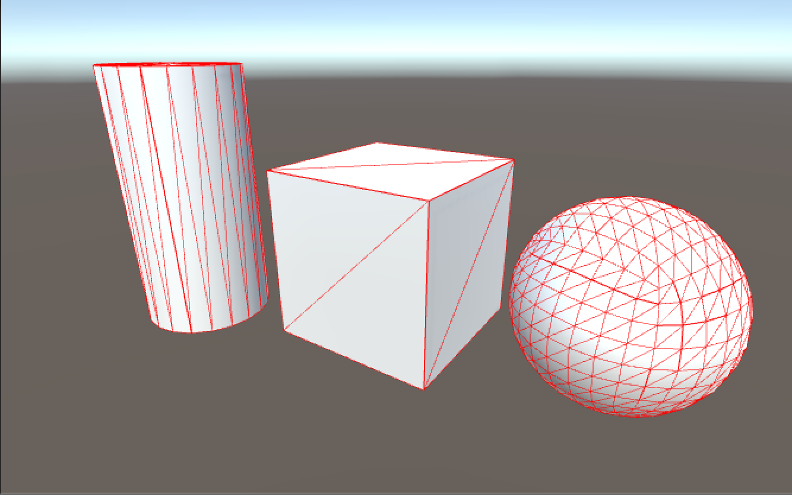
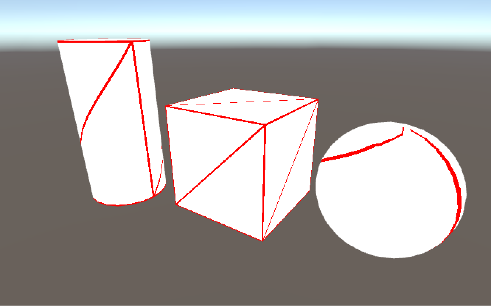

這次來提供自己找到的幾種 Wireframe Effect 做法
GL.wireframe、GL.LINES 以及 UV wireframe shader

1.GL.wireframe
全局 Wireframe 效果
using UnityEngine;
using System.Collections;
public class GLWireframe : MonoBehaviour
{
void OnPreRender()
{
GL.wireframe = true;
}
void OnPostRender()
{
GL.wireframe = false;
}
}將 GLWireframe.cs 附加到 Camera 上即可運作
原始畫面


2.GL.LINES
單一物體 Wireframe 效果
using UnityEngine;
public class GLLines : MonoBehaviour
{
public Material lineMaterial;
private Mesh m_mesh;
private Vector3[] m_vertices;
private int[] m_triangles;
private Transform m_transform;
void Awake()
{
m_mesh = GetComponent<MeshFilter>().mesh;
m_vertices = m_mesh.vertices;
m_triangles = m_mesh.triangles;
m_transform = transform;
}
public void OnRenderObject ()
{
lineMaterial.SetPass (0);
GL.PushMatrix ();
GL.MultMatrix (m_transform.localToWorldMatrix);
GL.Begin (GL.LINES);
for(int cnt = 0; cnt < m_triangles.Length; cnt += 3)
{
GL.Vertex (m_vertices[m_triangles[cnt]]);
GL.Vertex (m_vertices[m_triangles[cnt + 1]]);
GL.Vertex (m_vertices[m_triangles[cnt + 1]]);
GL.Vertex (m_vertices[m_triangles[cnt + 2]]);
GL.Vertex (m_vertices[m_triangles[cnt + 2]]);
GL.Vertex (m_vertices[m_triangles[cnt]]);
}
GL.End ();
GL.PopMatrix ();
}
}這裡的 lineMaterial 用的是基本的 Unlit/Color

將 GLLines.cs 附加到物件上即可運作
原始畫面
使用效果

3.UV wireframe shader
Shader "Unlit/UV Wireframe Shader"
{
Properties
{
_LineColor("Line Color", Color) = (1, 1, 1, 1)
_GridColor("Grid Color", Color) = (0, 0, 0, 1)
_LineWidth("Line Width", float) = 0.05
}
SubShader
{
Pass
{
CGPROGRAM
#pragma vertex vert
#pragma fragment frag
#include "UnityCG.cginc"
uniform float4 _LineColor;
uniform float4 _GridColor;
uniform float _LineWidth;
struct appdata
{
float4 vertex : POSITION;
float4 uv : TEXCOORD0;
};
struct v2f
{
float4 pos : POSITION;
float4 uv : TEXCOORD0;
};
v2f vert (appdata v)
{
v2f o;
o.pos = mul( UNITY_MATRIX_MVP, v.vertex);
o.uv = v.uv;
return o;
}
float4 frag(v2f i ) : COLOR
{
float2 uv = i.uv;
if (uv.x < _LineWidth)
return _LineColor;
else if(uv.x > 1 - _LineWidth)
return _LineColor;
else if(uv.y < _LineWidth)
return _LineColor;
else if(uv.y > 1 - _LineWidth)
return _LineColor;
else if(uv.x - uv.y < _LineWidth && uv.x - uv.y > -_LineWidth)
return _LineColor;
else
return _GridColor;
}
ENDCG
}
}
}這個 Shader 主要的運作方式是
提取 Model 的 uv
來做為 Wireframe 的判斷
因為是使用 uv 來判斷是否渲染 Wireframe
所以在某些 Model 上的運作會不理想
原始畫面
使用效果
